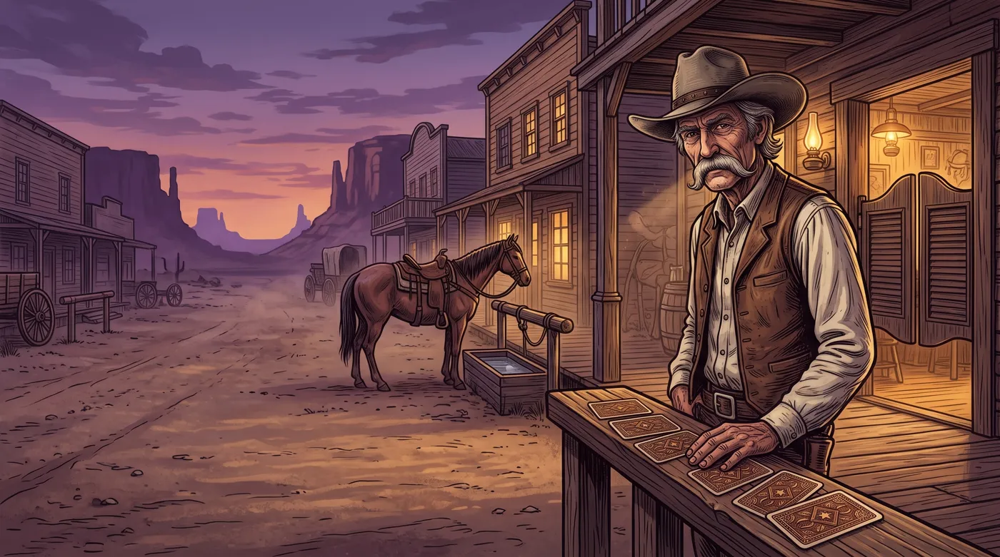
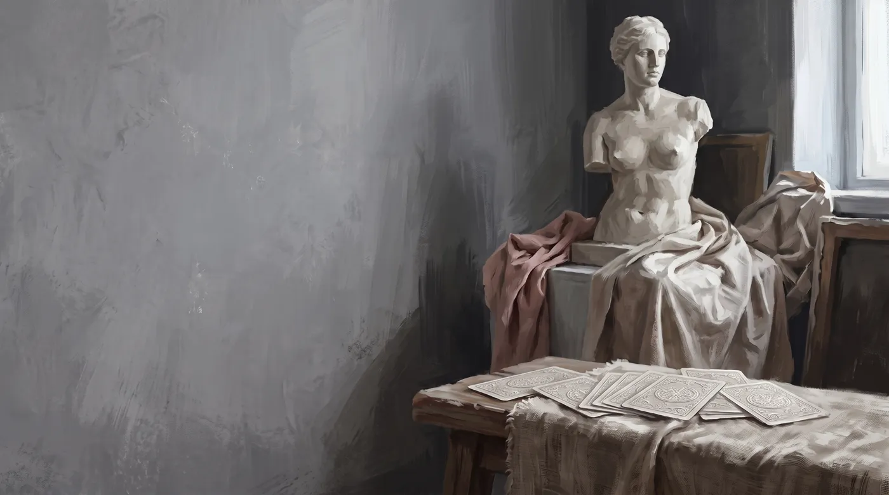
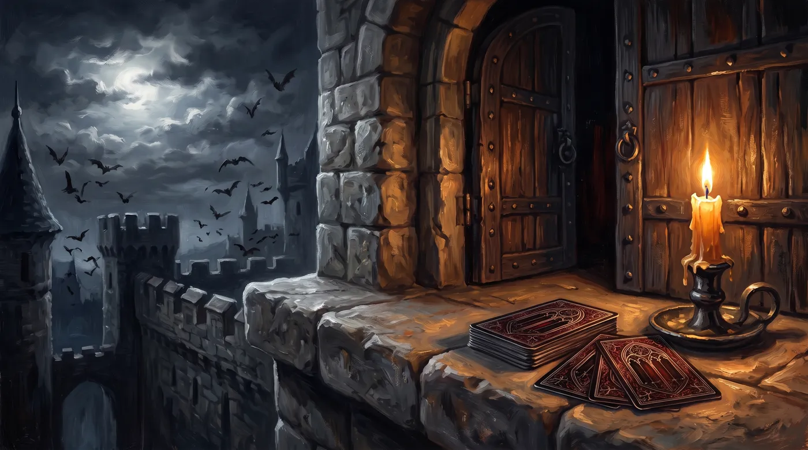
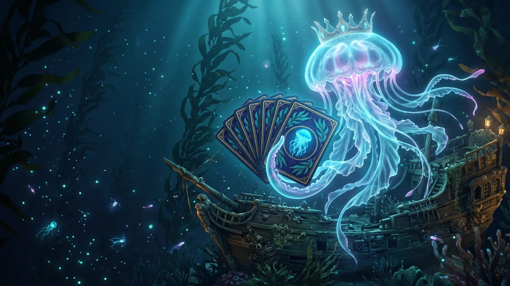
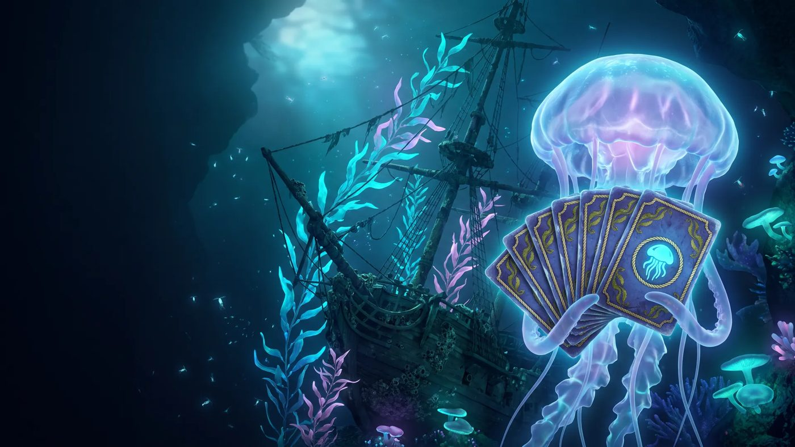

Revisions
Main Street, another pass
The street, with a figure so it reads as western the way the saloon does.

Plaster Studio, reframed
The cast's face and torso are the subject. The cloth stays at the base.

Candle Gate
The castle door, the candle, and bats in the moon.

Deep sea, last night's test
Model A, the one scored highest. Kelp, a sunken ship, and a jellyfish.

Model B, the runner-up.
